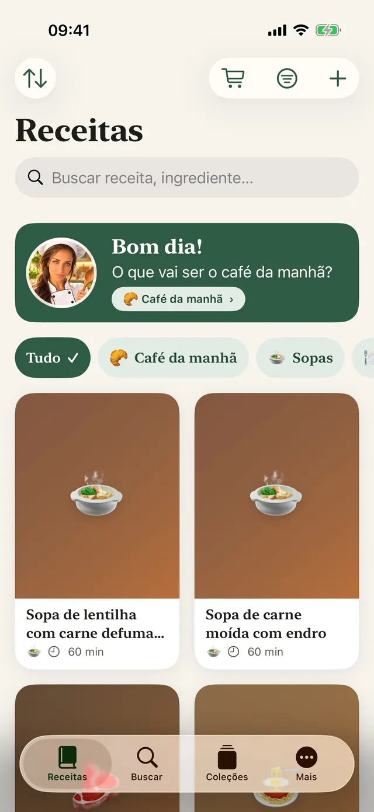
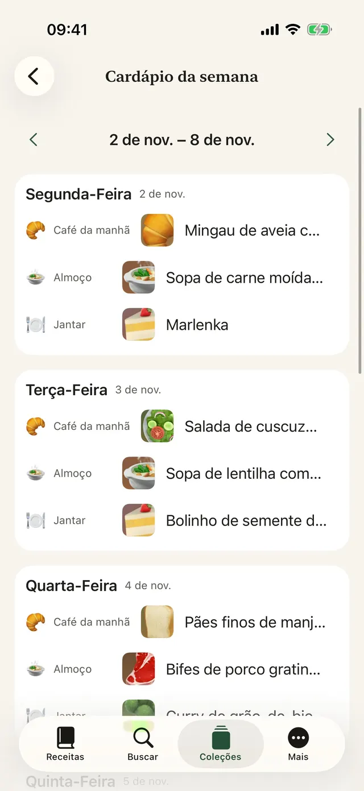
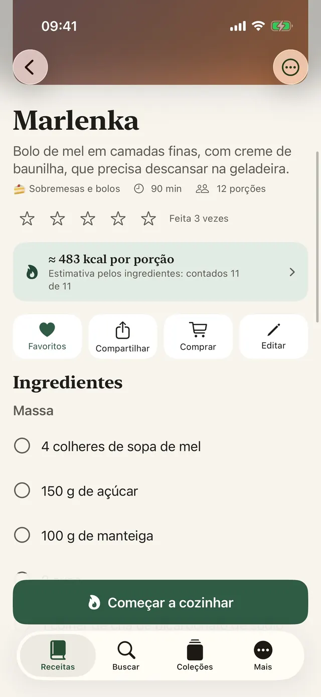
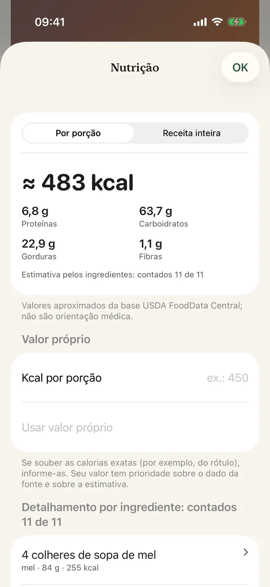
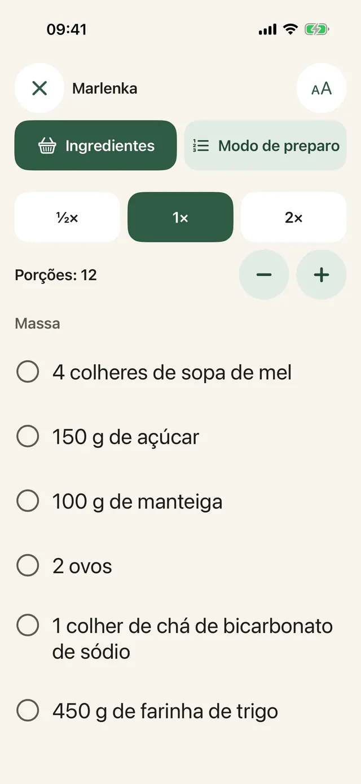
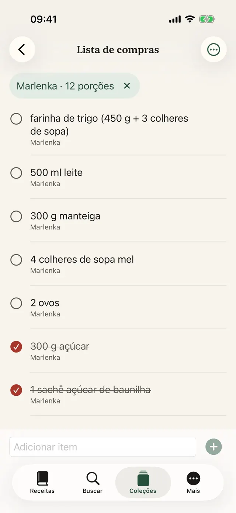
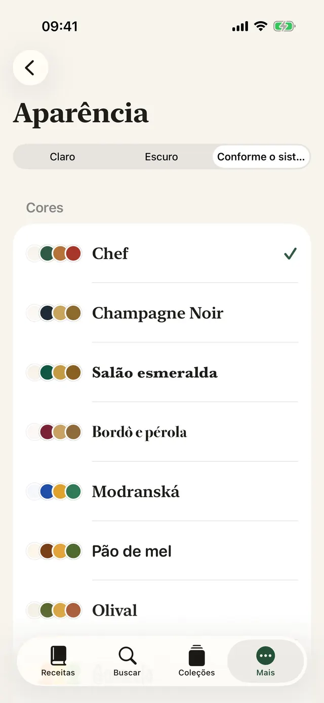
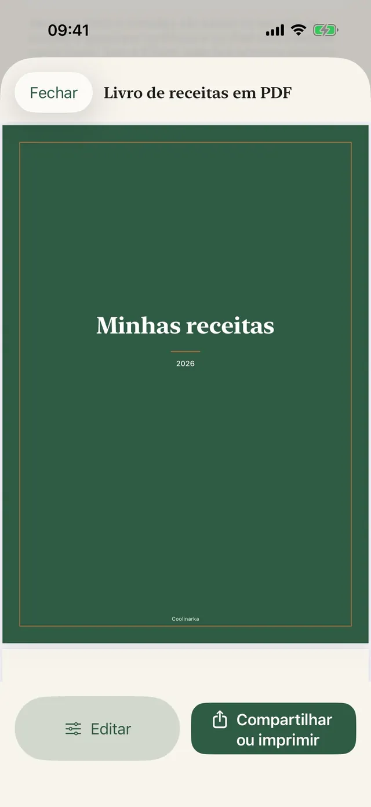
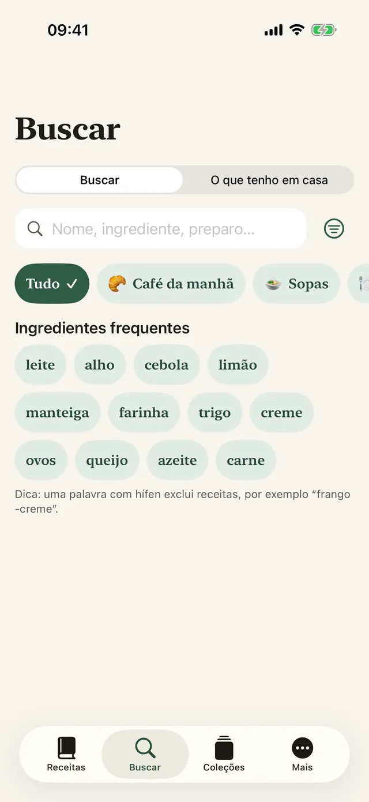
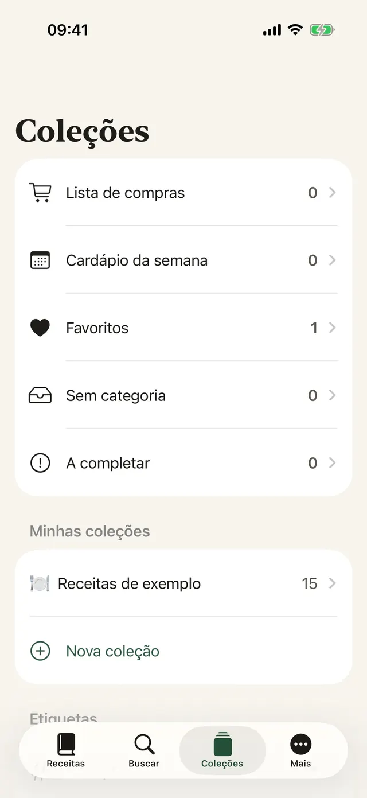

Salve com um toque
No Instagram, no Facebook ou no Safari, toque em Compartilhar e escolha Coolinarka.
Salve uma receita do Instagram, do Facebook, de um site ou de um vídeo. O Coolinarka transforma tudo em ingredientes e passos bem organizados e guia você passo a passo na hora de cozinhar.
Para iPhone e iPad, grátis. A versão para Android chega em breve ao Google Play. Avise-me quando sairPara iPhone, iPad e Android, grátis.

É assim que uma receita aparece em uma publicação nas redes sociais. Um toque e fica tudo em ordem, com porções que você pode recalcular.
😍😍 Penne com brócolis ao creme!!! 400 g de penne, 1 cabeça de brócolis, 250 ml de creme de leite, 2 dentes de alho, 50 g de queijo parmesão, sal e pimenta ... Cozinhe o penne conforme a embalagem e, nos últimos 4 minutos, junte os buquês de brócolis. Doure rapidamente o alho no óleo, acrescente o creme de leite e aqueça. Escorra a massa com o brócolis, misture com o molho e polvilhe com o parmesão. 🔥🔥 #penne #food
Uma massa simples, que até as crianças adoram.
Receita de exemplo do app. As publicações reais costumam ser ainda mais bagunçadas, e o Coolinarka dá conta delas, mesmo a partir de uma captura de tela ou de um vídeo.
Texto grande, um passo de cada vez, e a tela não apaga. Inicie um timer com um toque, mesmo com as mãos cheias de farinha.
Nesta demonstração, o timer corre mais rápido.
Cozinhe o penne conforme a embalagem e, nos últimos 4 minutos, junte os buquês de brócolis.
Os ingredientes de várias receitas são somados. Mude o país e veja a palavra buscada passar para o idioma da loja, mesmo quando a receita está em outro idioma.
Você adiciona o item ao carrinho na loja. O app não tem acesso à sua conta na loja. A disponibilidade depende do seu endereço.
Uma brasileira em Roma, um carioca em Madri, uma paulista em Buenos Aires. Em uma loja no exterior, basta um pequeno deslize para aparecer outra coisa no carrinho. O Coolinarka busca no idioma da loja para isso não acontecer com você. Você sabe o que levaria para casa?
Nove temas com ícone próprio, modo escuro e texto maior. Escolha um e toda esta página muda, igualzinho ao app.
Telas reais, no idioma em que você está lendo esta página.









No Instagram, no Facebook ou no Safari, toque em Compartilhar e escolha Coolinarka.
Um vídeo ou uma gravação de tela vira receita, e a fala é transcrita direto no celular.
Planeje a semana inteira, preencha os espaços vazios com suas favoritas e mande tudo para a lista de compras.
Tipos de prato, etiquetas, favoritos e coleções próprias.
Por nome, ingredientes ou modo de preparo, com ou sem acentos.
O widget O que cozinhar hoje na Tela de Início e na Tela Bloqueada, e a Siri: “O que cozinhar no Coolinarka”.
Quem recebe abre no Coolinarka com a foto, sem as suas avaliações e anotações.
Corte, rotação e filtros.
As receitas são sincronizadas pelo iCloud entre aparelhos com a mesma conta Apple.
Faça backup da sua coleção ou leve-a para outro app.
Incluindo as receitas de exemplo e a estimativa de calorias.
O app não tem conta, anúncios nem rastreamento. As receitas ficam no seu aparelho e no seu iCloud privado, e o desenvolvedor não tem acesso a elas.
Receitas, importação, exportação, backups, iCloud e modo cozinha não custam nada. O Plus é uma compra única, sem assinatura, e pode ser compartilhado com a família.
Preço de lançamento € 4,99 até 30/11/2026, a partir de 1/12/2026 € 14,99. Pagamento único.
Preço para a zona do euro, nos outros países vale o preço local da App Store e do Google Play. Os valores são aproximados e não constituem orientação médica. O cálculo é feito no aparelho.
Baixe o Coolinarka e salve sua primeira receita hoje mesmo.
Para iPhone e iPad, grátis. A versão para Android chega em breve ao Google Play. Avise-me quando sairPara iPhone, iPad e Android, grátis.